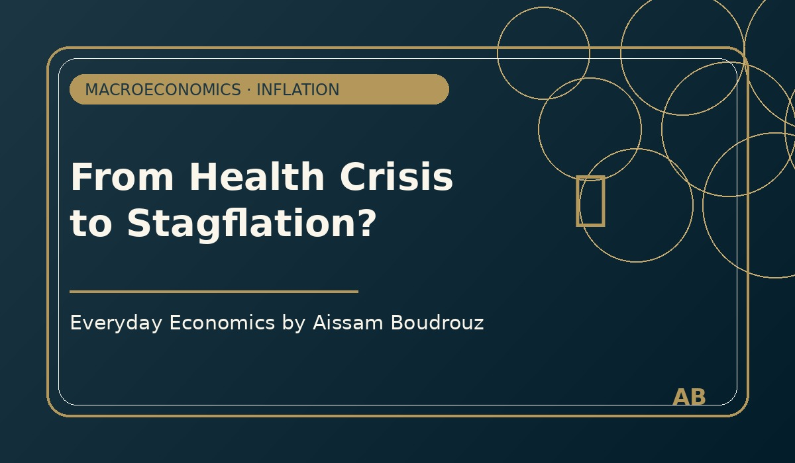

From Health Crisis to Stagflation?
The COVID-19 crisis was first a health crisis. But very quickly, it became an economic crisis. Supply chains were disrupted, production slowed down, public spending increased, and monetary policy became highly accommodative.
When economies reopened, demand recovered faster than supply. Households wanted to consume again, firms tried to rebuild inventories, and global markets faced pressure on energy, transportation, food, and raw materials.
This combination created a difficult macroeconomic environment: rising prices, uncertainty, and weaker growth prospects.
Why stagflation became a concern
Stagflation refers to a situation where inflation is high while economic growth is weak. It is one of the most difficult macroeconomic situations because the usual policy tools create trade-offs.
If central banks raise interest rates to fight inflation, they may reduce demand and slow growth even more. If governments support demand too strongly, they may worsen inflationary pressures.
The post-Covid period revived this debate because inflation was not only driven by demand. It was also linked to supply shocks, energy prices, logistics problems, and geopolitical tensions.
The lesson
The main lesson is that inflation is not always a simple monetary phenomenon. Sometimes it reflects deeper tensions in production, trade, energy markets, and expectations.
Understanding inflation requires looking at both demand and supply, but also at institutions, expectations, and international shocks.
← Back to Articles